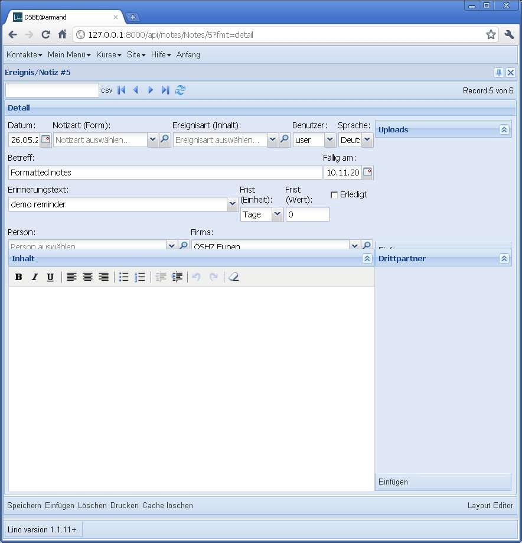
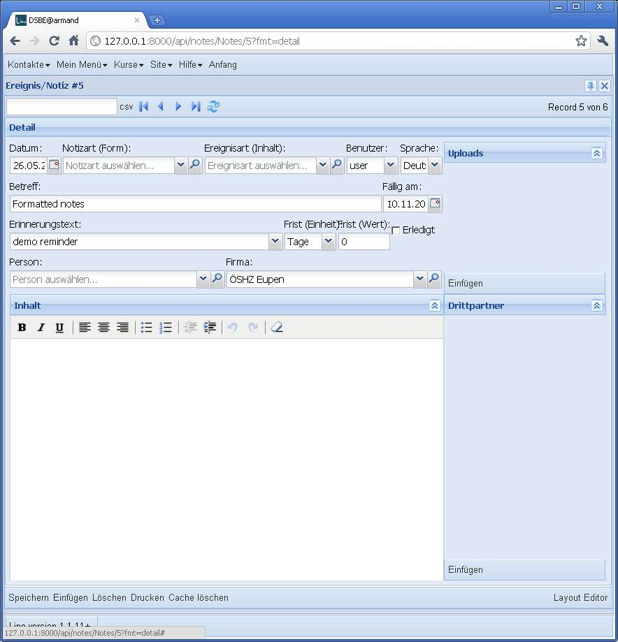
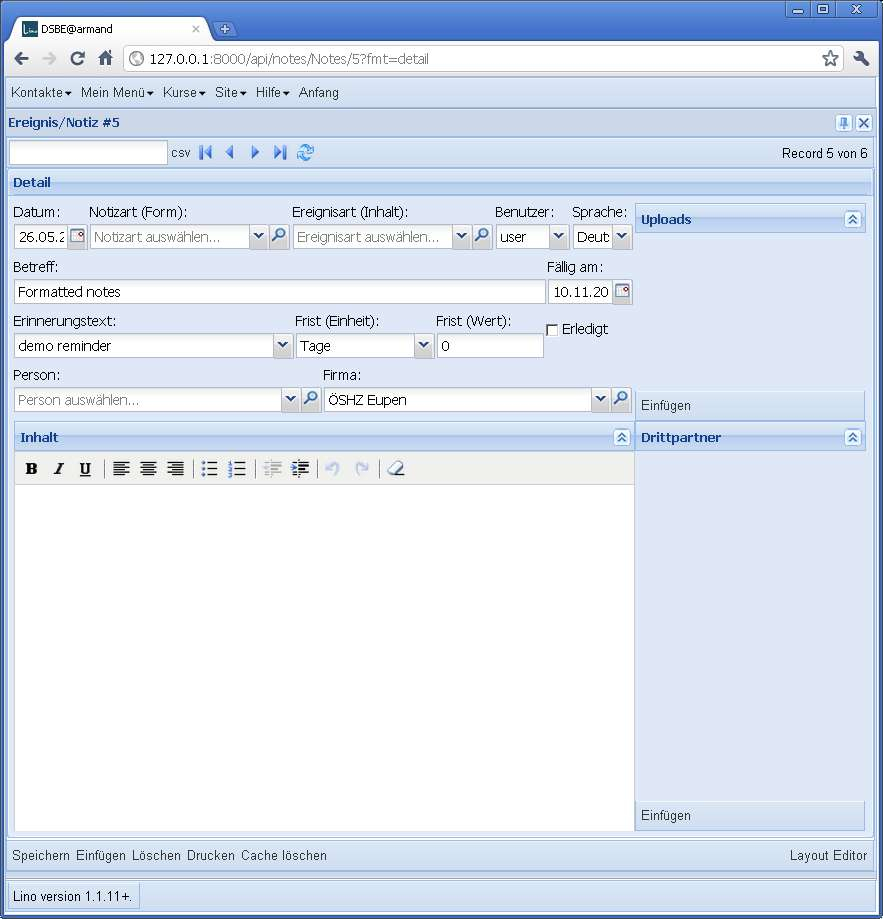

20110603¶
Und doch noch weiter am WYSIWYG-Editor¶
Mir ist über Nacht aufgefallen, was noch fehlt: die Benutzer, die bisher gewohnt sind, unformatierte Notizen zu erfassen, werden sich daran stören dass sie nun jedesmal einen Button mehr klicken müssen um den Text einzugeben. Andererseits wollen wir ja eine Lösung für den Fall, dass eine Notiz mal länger wird und ausführlich formatiert werden soll. Lösung ist, dass Lino zwei Editoren anbietet: einen TinyMCE mit nur einer Toolbar im Formular selber, und per Klick öffnet sich der Editor im eigenen Fenster. Also statt eines Lino.HtmlBoxPanel mach ich eine neue Klasse Lino.RichTextPanel.
Ein Layout-Bug weniger¶
Beim Arbeiten am TextFieldPanel fiel mir ein Bug auf: wenn das fieldLabel eines Feldes wegen mangelnder Breite des Fensters auf zwei Zeilen verteilt wird, dann kann das zu falscher Dimensionierung der davon abhängigen vflex-Elemente führen.
 Im Beispiel links passen die Texte
“Frist (Einheit)” und “Frist (Wert)” nicht auf eine Zeile.
Rechts das Gleiche, nachdem ich in der lino.css folgendes eingefügt habe:
.x-form-item-label{
white-space: nowrap;
}
Zusatzfrage: Warum macht Lino das Feld “Erinnerungstext” nicht einfach ein wenig breiter? Richtig, das wäre ja im obigen Fall eine evidente Umgehung des Problems.
Das kam daher, dass die relative Breite dieser Felder in der notes.Note.dtl wie folgt deklariert war:
left =
date:10 type:25 event_type:25 user:10 language:8
subject:60 reminder_date:10
reminder_text:50 delay_type:10 delay_value:10 reminder_done:10
person company
Das ändern wir nach:
reminder_text:30 delay_type:15 delay_value:12 reminder_done:10
Resultat:
Trotzdem ist das white-space: nowrap; in der lino.css
eine gute Sache, denn auch bei optimaler Proportionierung kann es
ja immer mal passieren, dass der Benutzer sein Browserfenster
unerträglich eng macht:
In so einem Extremfall sind doch überlappende Feldbezeichner immer noch besser as komplett falsch positionierte Elemente, oder?
Endspurt vor Release 1.1.12¶
Ich habe mal den Dump eines Kunden runtergeladen und versuche den bei mir zu importieren. Dabei stelle ich fest, dass das Problem mit den Babelfeldern, das ich am 0527 gesehen habe (und das inzwischen behoben ist), auch im py-Serializer Folgen hatte: alle leeren Babelfleder haben dort None statt u’‘ stehen.
Deshalb muss ich das Dump manuell korrigieren:
def create_countries_language(id,name,iso2,name_fr,name_en):
if name_fr is None: name_fr = ''
if name_en is None: name_en = ''
return Language(id=id,name=name,iso2=iso2,name_fr=name_fr,name_en=name_en)
(Das Gleiche für alle betroffenen Tabellen: Language, Country, ContractType, AidType, ExamPolicy...)
Diverse Optimierungen in lino.utils.dpy:
- im obigen Fall musste ich immer bis ganz zum Schluss
warten bevor er eine Fehlermeldung auswarf. Das war natürlich ärgerlich.
Deshalb schaut er jetzt in
lino.utils.dpy.FakeDeserializedObject.try_save()etwas genauer hin, bevor ein ein misslungenes save() wiederholt. - Die Deklarationen resolve_model und create_%s im dpy-Dump ist jetzt alphabetisch sortiert. Was nützlich ist, wenn man zwei Dumps miteinander vergleichen will. Das war bisher (für Dumps von verschiedenen Versionen) manchmal fast unmöglich, weil die Reihenfolge sich sehr ändern konnte.
- Wenn ich die importieren Daten wiederum exportiere,
generiert er jetzt im Dump auch ein Objekt sites.Site.
Beim erneuten Einlesen kriege ich dann
“Exception: Failed to save independent Site #1 (example.com). Abandoned.”
Ich schätze mal, dass das daran liegt, dass initdb
jetzt nicht mehr reset sondern syncdb und flush macht.
Deshalb ist django.contrib.sites jetzt auch aus den
INSTALLED_APPSraus.
Kleinkram:
- Die Felder type und event_type (in
lino.apps.dsbe.models.Notesowielino.modlib.notes.models.Note) werden jetzt disabled_fields, wenn das Dokument ausgedruckt ist. lino.apps.dsbe.models.Contractsist jetzt nach Vertragsnummer sortiert (statt bisher zufällig).- Erfreulich: 5 TinyMCE-Editoren in einer Seite gehen nicht
merklich auf die Performance.
Also die Memofelder in
lino.apps.dsbe.models.Contractdürfenformat='html'kriegen. - Aufzählungen werden noch immer nicht gedruckt. Testfall Vertrag Nr 4.

{kind=link}
{kind=link}
{kind=link}
{kind=link}